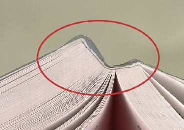
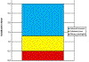

FOLIENABLÖSUNG AN DEN SCHNEIDKANTEN
|
Bei Broschuren ist manchmal festzustellen, dass
sich die Kaschierfolie des Umschlages von den
Schnittkanten her ablöst. Insbesondere wenn
der Benutzer beim Halten des Umschlages bewusst
oder unbewusst über die Schnittkante streicht,
wird die Kaschierfolie in diesem Fall angehoben und
einige Zehntel Millimeter weit abgelöst. Die
Ablösung kann so durch den Gebrauch weiter
fortschreiten, bis sie deutlich als Mangel
empfunden wird (Abb. 1).
|

|
Abb. 1: Ablösen der Folie an der
Schneidkante.
|
|
|
|
Mögliche Ursachen:
|
|
|
|
Abb. 2: Spaltung im Umschlagkarton.
|
|
|
|
|
|
Abb. 3: Spaltung im Umschlagkarton
(Teilansicht).
|
|
|
|

|
|
Abb. 4: Schälkraftbereich für
Folienkaschierungen auf Umschlagkartons.
|
|
|
|

|
|
|
|
|
|

|
|
|
|
|
|

|
|
|
|
|
|

|
|
|
|
|
|

|
|
|
|
|
|
|
Beim Beschnitt wird der Verbund stark mechanisch belastet
und es kann zur Spaltung innerhalb des Kaschierverbundes
kommen. Natürlich gilt auch hier, dass immer das
„schwächste Glied" versagt, d. h. bei einer
schlechten Gefügefestigkeit des Umschlagkartons spaltet
der Karton in sich oder der Strich trennt sich vom
Gefüge. Dies führt bei Benutzung der Broschur zu
unansehnlichen Kanten am Beschnitt (Abb. 2 und Abb. 3).
Weiterhin kommt es zu einer Folienablösung, wenn die
Verbundfestigkeit zwischen der Kaschierfolie und dem
bedruckten Umschlagkarton extrem schlecht ist.
Die möglichen Ursachen für eine solche, schlechte
Folienhaftung können sein:
1. Eine zu geringe Kohäsion der Druckfarbenschicht.
2. Die Klebstoffauftragemenge zwischen Karton und Folie ist
zu gering.
3. Die Hochfrequenz-Trocknung bei der buchbinderischen
Weiterverarbeitung war zu hoch eingestellt. Dadurch kann es
zu einer verstärkten Wasserdampfbildung zwischen Karton
und Folie kommen, wodurch ein Abplatzen der Folie von der
Kartonoberseite möglich wird.
Untersuchungen in der FOGRA haben gezeigt, dass es drei
messtechnische „Bereiche“ für die
Schälkraftfestigkeit von Folienkaschierungen gibt:
1. Der „sichere Bereich“ mit Schälkraftwerten
über 1,3 N/cm, in dem bezüglich einer
Folienablösung an der Schneidkante keine Probleme
auftreten.
2. Die „Gefahrenzone“ mit Schälkraftwerten
zwischen 0,5 N/cm und 1,3 N/cm, in der mit
Folienablösungen gerechnet werden muss.
3. Der Bereich mit Schälkraftwerten unter 0,5 N/cm, in
dem sicher Kaschierablösungen auftreten (Abb. 4).
|
Mögliche Abhilfen:
|
|
Die Verarbeitungsparameter und die Arbeitsmaterialien
müssen so abgestimmt sein, dass keine der genannten
Ursachen im weiteren Verlauf der Verarbeitung zu
Störungen führen. Der Schnitt selbst muss zur
Verhinderung einer Folienablösung mit möglichst
optimalen Parametern erfolgen, d. h. die Anzahl der zu
schneidenden Broschuren, der Pressdruck und die Geometrie
der Anpressplatte sollten auf das Produkt abgestimmt sein.
Die Messer sollten einen ordentlichen Schnitt ohne zu starke
Gratbildung ermöglichen.
|
Beispiel(e):
|
|
Für eine Broschurenauflage waren Folienkaschierungen
mittels UV-Klebstoff erfolgt. Bei dem Beschnitt wurde
festgestellt, dass bei bestimmten Stapelschnitten immer bei
den oben liegenden Broschuren eine Delaminierung entlang der
Schneidkanten auftrat. Versuche mit verschiedenen
Messerwinkeln führten nicht zu dem gewünschten
Erfolg. Der Beschnitt der kaschierten Druckbogen zu
Einzelnutzen im Planschneider konnte hingegen problemlos
durchgeführt werden.
Die FOGRA sollte klären, ob die Ursache für die
Folienablösung bei der Kaschierung, der Druckfarbe oder
bei unzureichenden Schneidparametern beim
Dreiseiten-Beschnitt lag.
Schälkraftmessungen an den Kaschierungen zeigten, dass
die Delaminierungen nicht im Zusammenhang mit einem Fehler
bei der Folienkaschierung standen.
Bei einem Teil der Auflage wurde auf den gelben
Farbflächen der Broschuren durch einen Folienabzug
generell die Druckfarbe gespalten. Auf druckfreien
Flächen und auf Vollflächendrucken mit einer
anderen Druckfarbe (Rot) stiegen die Schälfestigkeits-
bzw. Haftfestigkeitswerte dagegen um nahezu den
fünffachen Wert an.
Bei den restlichen beanstandeten Titeln wurden generell
Haftwerte gemessen, die deutlich im „sicheren
Bereich“ lagen um einen Broschurenumschlag
schneidfähig zu machen.
Durch Schneidversuche auf einer Produktionsanlage konnten
diese Aussagen bestätigt werden.
Als Reklamationsursache kam somit eine verminderte Trocknung
der Druckfarben im Augenblick der Weiterverarbeitung in der
Buchbinderei ebenso in Frage, wie eine unzureichende
Pressung entlang der Schneidlinien beim
Dreiseiten-Beschnitt.
|
Allgemeine Hinweise:
|
|
Für den Reklamationsfall:
Beschädigte Muster sicherstellen.
Schneidversuche an Einzelexemplaren mit unterschiedlicher
Einstellung des Pressdrucks durchführen.
Ergänzende Literatur:
KUEN, Th.; HUNDSDORFER, O.:
Anforderungen an die Glanzfolienkaschierung für
Umschläge und Buchdecken.
Wiesbaden/München: Bundesverband Druck und Medien e.V.
/ FOGRA, 1998 (72.002) - Forschungsbericht
|
|
|
|
|
|
|
Kontakt:
kuen@fogra.org
|
Fol-kue-200111
|